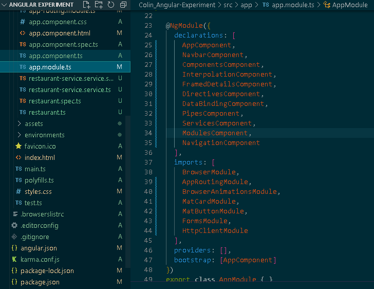

<mat-card class="content">
    A module is a collection of components, directives, pipes and services. A module is typically a reusable collection of parts that achieve some functionality. Every angular application has a root module called AppModule.
    The AppModule is like a hub for all the different parts of the application (components, services, other modules etc.). A variety of external modules, referred to as angular libraries, are included in this application, indicated by the @angular prefix.
    For example, most applications will include the FormsModule, the HttpClientModule and the RouterModule. Third party modules can also be installed using npm and imported for use. 
    In this application we use Angular Material, a library of commonly used ui components. <a style="color:whitesmoke" href="https://material.angular.io/">Check it out.</a> 
    
</mat-card>